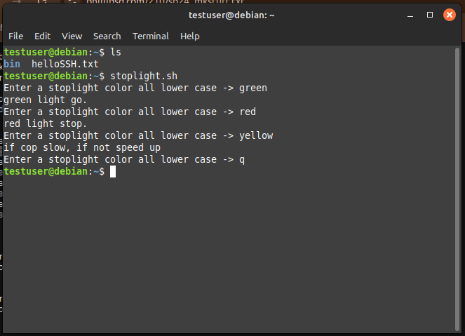

By this point I had learned a lot about the Debian-12 operating system and how to manage it. From this point on, I wanted to do a little bash scripting with my VM. Since I'm relatively new to bash scripting, I decided to start with some basic syntax like variables, loops, and functions.
Before I started writing scripts, I needed to create some directories and files to work with. I created a directory (which I called "bin") and a file (which I called "forloop.sh") with the following commands:
mkdir bin touch bin/forloop.sh
I also made a folder called "inclass" with this command:
mkdir inclass
Next, I opened the "forloop.sh" file in vim and wrote a simple bash script that would print my username to the terminal 10 times. Here is the script:
#!/bin/bash
# for_loop
FNAME=testuser
LST=$(seq 1 10)
for x in $LST
do
echo $FNAME
done
#--
After saving the file, I made it executable with this command:
chmod +x bin/forloop.sh
Finally, I ran the script with the following command:
./bin/forloop.sh
As expected, the script printed "testuser" 10 times to the terminal.
After completing the for loop script, I created a new script that was slightly more complex, and designed to simulate a traffic light. I created a new file called "stoplight.sh" with the following command:
nano bin/stoplight.sh
#!/bin/bash
# stoplight
# simple if test
display_light() {
case $1 in
"red") echo "red light stop.";;
"yellow") echo "if cop slow, if not speed up" ;;
"green") echo "green light go.";;
*) echo "cant";;
esac
}
# main
while true
do
echo -n "Enter a stoplight color all lower case -> "
read light
# [ is equal to cmd test
if [ $light == "q" ]
then break
fi
display_light $light
done
#--
After saving the file, I made it executable with this command:
chmod +x bin/stoplight.sh
And was able to run the script!
Next, I wanted to test the ability to run my scripts from any directory. I opened my .bashrc file with the following command:
nano ~/.bashrc
And added the an export command to the end of the file:
export PATH=$PATH:~/bin:~/inclass
After saving the file, I ran the following command to update the .bashrc file:
source ~/.bashrc
Now, I could run my scripts from any directory!
Finally, I tested some automation by copying the contents of this webpage: https://phillipsd.com/210/sp24_mkstuff.txt into my terminal. This simple action did a lot of wirk for me including making helpful functions, aliases, and would have set up my path if I hadn't already done so.
These scripts were simple, but they demonstrate the ability to easilly automate tasks with bash scripting. Now that I have a basic understanding of bash scripting, I can start adding useful scripts to my VM or my laptop.
